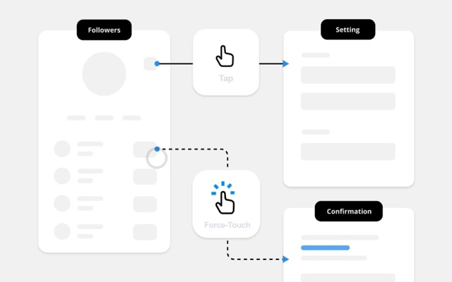

Human-Factors Interface Design
Alzheimer's Product Design

Educational Game Design

CAD Hopper

Swimmer Safety Device

Ethical Product Finder

Education in the United States was designed during the industrial revolution to prioritize efficient completion of repetitive tasks. It poorly prepares students for modern work-life which requires creativity, inquisitiveness, and teamwork. Acera, the Massachusetts school for science, creativity, and leadership, is addressing this problem through re-defining education.
Students love the school and get excited to go everyday. However, since Acera is only a K-8 school, it cannot carry students all the way through to adulthood. Students need to gain admittance into additional schools who judge students based on standardized test scores. Acera does not make test taking their central focus, which puts students at a disadvantage. Unless Acera can find a way around this, students will be set up for failure. If Acera can overcome the lack of tests, students can be prepared to lead fulfilling lives and add tremendous value to their community.
A team of 15 consultants and I worked together to ensure Acera student’s success. We defined the main barrier as other schools inability to compare Acera students to their peers. Over the course of the month I uncovered strategies for Acera students to shine when compared directly measured against. I crafted branding materials for Acera to garner acceptance and awareness of their new methods at higher education establishments. My consulting team’s work would move Acera one step closer to long-term success. The school is doing better than ever and has created many new partnerships throughout the education system.
You can read more about the project on Behance.
Nutrition is a global problem. People are plagued by preventable diseases deemed “lifestyle diseases” by popular media.
David Zhu and I recognized the opportunity to build a mobile app called FoodHabit, which users could leverage to easily and quickly log their meals. David was the genius who made our mobile application recognize the nutritional contents of a meal, only based on a photo of the plate. I helped users augment their will-power with features to make mindful eating easier. We wanted to afford users the ability to follow their desired eating habits by empowering them accurate information and healthy incentives.
A team of 15 consultants and I worked together to ensure Acera student’s success. We defined the main barrier as other schools inability to compare Acera students to their peers. Over the course of the month I uncovered strategies for Acera students to shine when compared directly measured against. I crafted branding materials for Acera to garner acceptance and awareness of their new methods at higher education establishments. My consulting team’s work would move Acera one step closer to long-term success. The school is doing better than ever and has created many new partnerships throughout the education system.
To read more about the project, view the formal write-up on Behance.
The UN predicts there will be over 9 billion people in the world by 2050, 70% of whom will live in cities. In fact, it will be almost impossible for us not to urbanize because of our limited resources in energy, water, and career opportunities. Finding good people to live with at a good place is hard.
The main services out there today advertise for a space but disregard the importance of people - people that’ll you’ll live with and see every day. City stress and the lack of human connections make lead to a 21% increased risk of anxiety disorders and a 39% increased risk of mood disorders. And even when we try to find refuge for our social life on Facebook or Twitter, we are actually moving away from a healthy social lifestyle with real friends.
Community housing (name not determined) is a service that helps individuals start and join housing communities so that they can be with people they value and value them. David Zhu along with a team of engineers researched how to make housing emotionally healthy and financially attainable. I joined the project and did user research by entering the Boston Cooperative Housing network. I uncovered the obstacles which inhibit healthy housing arrangements today, to make defined the challenges David and I would have to solve.
To read more about the project, view the formal write-up on Behance.